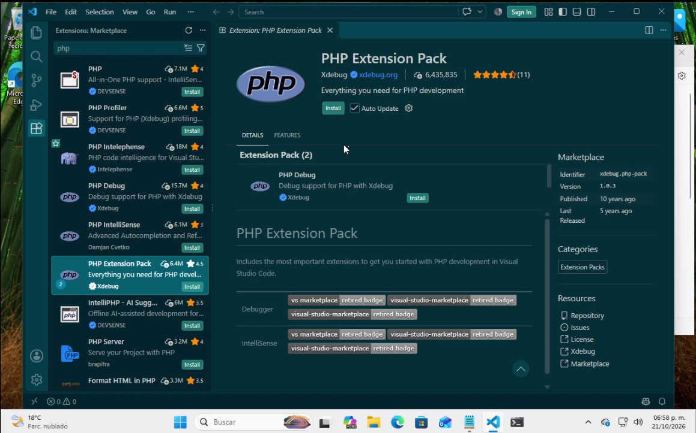
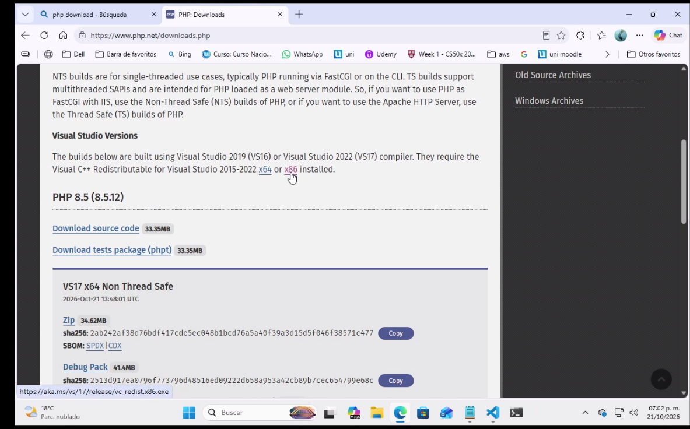
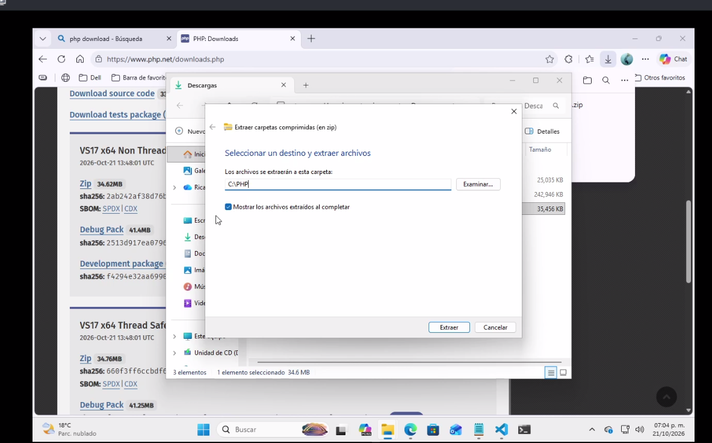
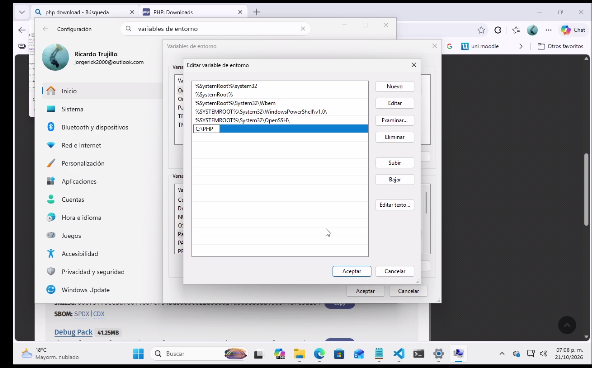
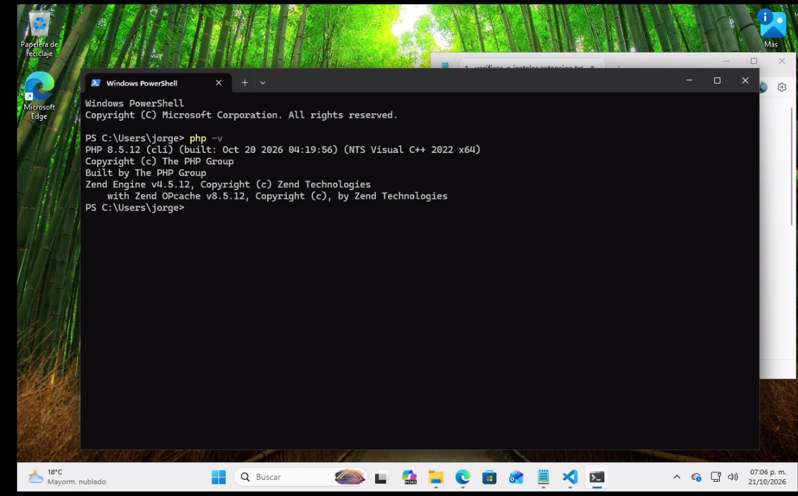
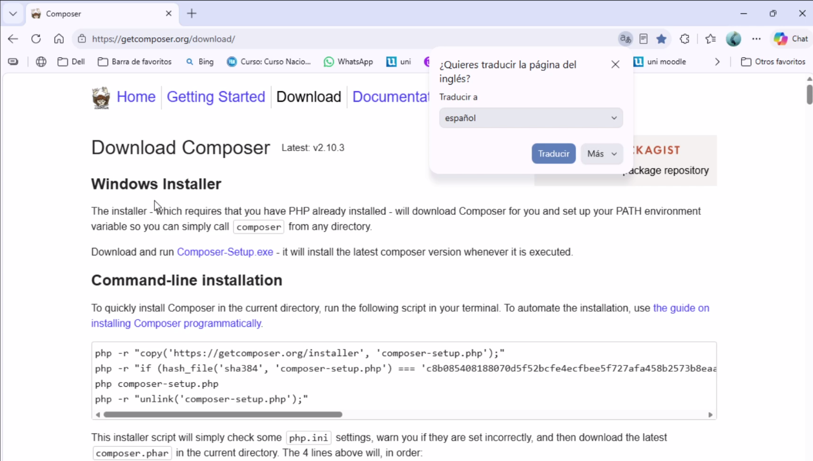
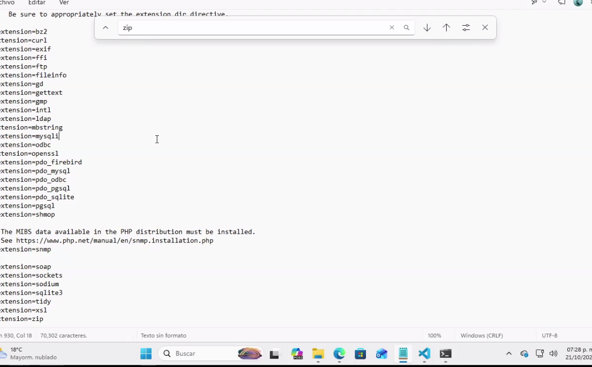
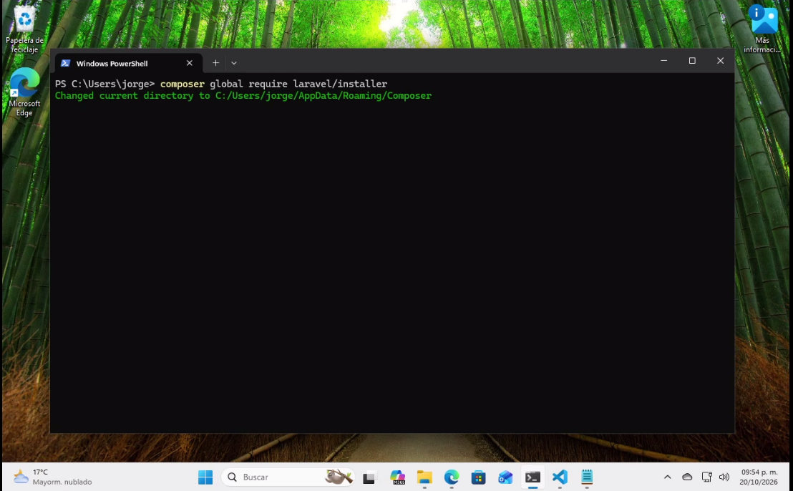
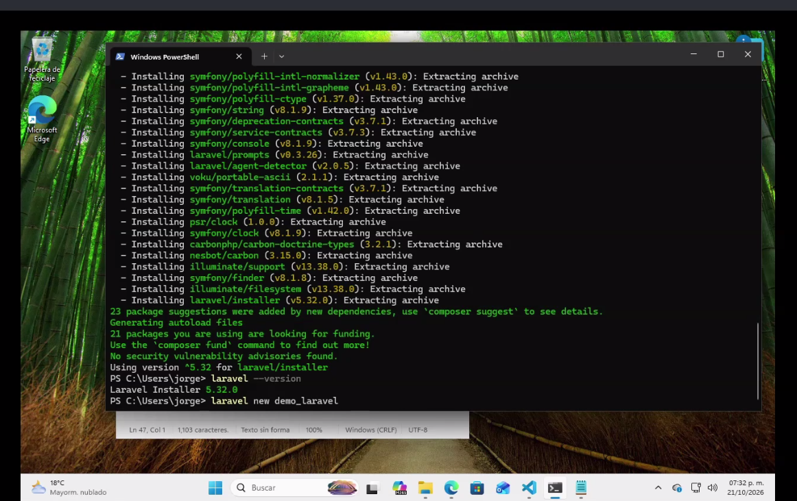
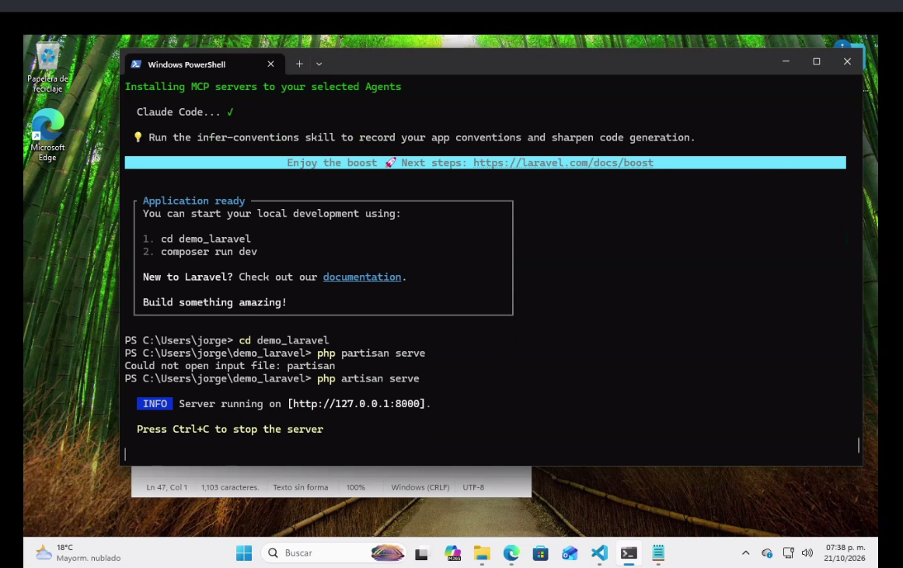

Aprovisionamiento y Despliegue de Laravel 11 en Windows 11
Procedimiento técnico paso a paso para la configuración del runtime de PHP 8.5.11 NTS, registro en PATH, habilitación de extensiones en php.ini, gestor Composer 2.10.03 y ejecución del servidor local Artisan.
📹 Demostración Práctica: Instalación en Windows 11
Registro audiovisual completo de la configuración y ejecución de comandos en el sistema.
Fase 1: Preparación del Entorno de Desarrollo (VS Code)
Extensiones de Ecosistema
Antes de incorporar los binarios del backend, se acondiciona Visual Studio Code integrando las herramientas que garantizan la introspección sintáctica, el formateo y la trazabilidad del código:
PHP Extension Pack: Proporciona soporte integral para PHP, incluyendo linting, validación sintáctica y depuración.
Laravel Blade Snippets: Habilita el coloreado de sintaxis y atajos automáticos para las directivas del motor de plantillas Blade.
Laravel Extra Intellisense: Autocompletado contextual avanzado para rutas, vistas, modelos de Eloquent y archivos de configuración.
GitLens: Integración profunda con Git para auditar la autoría de líneas y el historial de commits.

IMG01: Paquete de extensiones para desarrollo en PHP y Laravel en VS Code
2
Fase 2: Instalación de Librerías Base y Runtime de PHP
PHP 8.5.11 NTS & PATH
Para que el binario de PHP se ejecute de manera nativa en el sistema operativo Windows, se orquestan los siguientes pasos fundamentales:
Visual C++ Redistributable: Se descarga e instala el paquete redistribuible oficial de Microsoft (vc_redist.x64.exe) para asegurar la compatibilidad con las librerías dinámicas de C++.
Descarga de PHP: Desde el portal oficial (php.net/downloads.php), se obtiene el archivo ZIP de la versión Non-Thread Safe (NTS) para 64 bits.
Descompresión en Disco Local: Se extraen los binarios directamente en la raíz del sistema en la carpeta C:\PHP.
Variables de Entorno del Sistema (PATH): Se accede a Propiedades del Sistema > Variables de Entorno, se edita la variable del sistema Path y se agrega la ruta absoluta C:\PHP.
Se abre una consola de terminal (PowerShell / CMD) para comprobar la disponibilidad global del intérprete:
php -v
# Salida verificada en terminal:
# PHP 8.5.11 (cli) (built: Feb 2026) ( NTS Visual C++ 2022 x64 )

IMG05: Portal oficial de descargas en php.net

IMG06: Extracción limpia de binarios en C:\PHP

IMG07: Registro de C:\PHP en la variable de entorno PATH

IMG08: Verificación exitosa del comando php -v (v8.5.11)
3
Fase 3: Instalación de Composer y Activación de Módulos (php.ini)
Composer 2.10.03 & Extensiones
Composer actúa como el gestor de paquetes a nivel de aplicación indispensable para resolver el árbol de dependencias de Laravel:
Instalador Oficial: Se descarga Composer-Setup.exe desde getcomposer.org/download/ y se ejecuta, verificando que reconozca automáticamente la ruta de C:\PHP\php.exe.
Acondicionamiento de php.ini: En la carpeta C:\PHP, se edita el archivo php.ini para habilitar los módulos requeridos por Composer y Laravel, removiendo el punto y coma (;) inicial:
extension=fileinfo
extension=zip
Verificación de Gestor y Módulos: En una nueva terminal, se ejecutan las validaciones:
composer --version
# Salida verificada: Composer version 2.10.03
php -m
# Se valida la presencia de 'fileinfo' y 'zip' en la lista de módulos cargados

IMG09: Portal oficial de descarga de Composer

IMG12: Activación de extensiones zip y fileinfo en C:\PHP\php.ini
4
Fase 4: Instalación Global de Laravel CLI
Laravel Installer 5.32.0
Se instala el cliente de línea de comandos de Laravel de forma global a través de Composer, permitiendo la generación de proyectos con el comando laravel new:
composer global require laravel/installer
laravel --version
# Salida verificada en terminal: Laravel Installer 5.32.0

IMG11: Ejecución del comando composer global require laravel/installer
5
Fase 5: Inicialización del Proyecto Demo y Servidor de Desarrollo
Artisan & http://127.0.0.1:8000
Se genera la aplicación de red de prueba y se despliega el servidor HTTP local mediante Artisan:
# 1. Crear nuevo proyecto
laravel new demo-laravel
# 2. Navegar al directorio generado
cd demo_laravel
# 3. Arrancar el servidor de desarrollo
php artisan serve
# Server running on [http://127.0.0.1:8000]
Al ingresar a http://127.0.0.1:8000 en el navegador web, se despliega la interfaz de bienvenida de Laravel 11, confirmando la resolución de peticiones HTTP en Windows:

IMG15: Inicialización del proyecto con laravel new demo-laravel

IMG18: Comprobación exitosa en navegador en http://127.0.0.1:8000